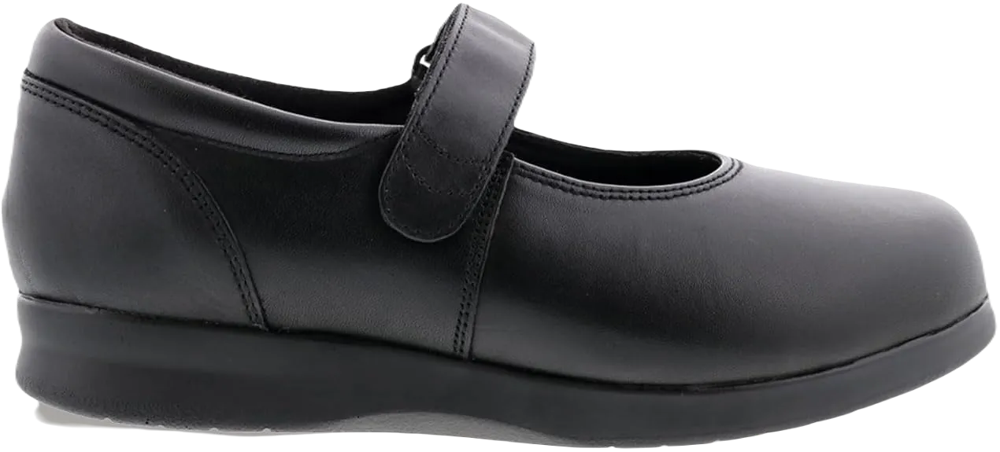

12 Best Running Shoes for Tailor’s Bunion
Shoes protect us from the harsh outside environment, but if they start causing pain, they lose their purpose. Foot pain, particularly bunion pain, is often the result of choosing the wrong shoes. Bunion pain, especially at the toe, can worsen if you continue wearing shoes that contributed to the problem, such as those causing a tailor’s bunion. While this pain can stem from various factors like genetics, inflammation, swelling, or foot trauma, footwear plays a significant role in either aggravating or relieving the discomfort.
Are you dealing with tailor’s bunion pain? Experts recommend opting for shoes with a wider toe box and enough space for your forefeet. Tight-fitting shoes only worsen the pain, making it more difficult to manage. By avoiding ill-fitting footwear, you can soothe your feet and reduce pain, particularly if it's not an inherited condition. Here are some top shoe brands trusted by customers for relieving tailor’s bunion foot ache.
-
#1
Propet Men’s Vista Shoe
.webp)
The Vista shoe is designed with comfort in mind, making it an excellent choice for those suffering from bunion joint pain. Its upper is crafted from high-quality leather, featuring layers of soft footbeds that provide lasting comfort, allowing for extended wear without discomfort.
One of the standout features of this shoe is the use of fine-quality nylon Velcro straps, which make it easy for the wearer to slide their foot in effortlessly. This convenience is especially beneficial for those who may struggle with traditional laces or closures.
What’s more, the Vista shoe is available for both men and women, so you can wear it with confidence regardless of your gender. The Velcro straps play a significant role in alleviating annoying bunion pain, making this shoe a practical choice for anyone seeking relief while enjoying stylish footwear. -
#2
Ecco Fusion Moc Toe
.webp)
The best feature of this Oxford shoe is its perfect blend of style and comfort. This lace-up design offers a relaxed fit, making it a great choice for those experiencing bunion foot pain, where even the slightest bump can feel painful.
Crafted with a high-quality polyurethane outsole, this shoe effectively absorbs shocks and impacts, providing a smooth walking experience. This durability is essential for individuals who need reliable footwear throughout their daily activities.
The robust and long-lasting upper of this Ecco shoe ensures that it can withstand various conditions, allowing you to wear it with confidence. Whether you’re dressing up or keeping it casual, this shoe delivers both style and functionality. -
#3
Orthofeet 517 Men’s Shoe
.webp)
The Orthofeet shoe is exceptional for its remarkable therapeutic properties, making it a top choice for those with tailor’s bunion foot pain. Wearing regular shoes can be quite painful in this condition, but this Orthofeet design features ultra-soft cushioning that significantly reduces irritation and soothes sore joints.
The footbed provides excellent support for the arch and sensitive areas of the feet, while the padded midsole is designed to alleviate pain during walking or when applying pressure. Additionally, the shoe offers ample room for your foot to adjust comfortably, enhancing overall ease of wear.
With a non-binding design and an ideal shape, this shoe caters to your needs perfectly. Its wide toe box, combined with a soft upper, effectively minimizes irritation and abrasions, ensuring a comfortable fit for all-day wear. -
#4
Aetrex Cheryl Mary Jane Shoe

This shoe has been proven to provide significant relief for tailor’s bunion foot pain. Its fine and exquisite design ensures comfort and ease in every step. The Aetrex Cheryl Mary Jane shoe is perfect for hot days, as it is crafted from breathable materials and features a lining that promotes airflow. Additionally, its anti-odor properties will surely be appreciated.
When dealing with tailor’s bunion foot pain, it's advised to avoid heavy footwear, and this shoe excels in that regard. It is lightweight, ensuring you won't feel any strain or discomfort while wearing it. The adjustable straps allow for a personalized fit, keeping you relaxed and poised throughout the day.
For added protection, the leather footbed incorporates advanced anti-microbial properties that help keep germs and harmful microbes at bay. Furthermore, the forefoot area is treated with high-quality gel, minimizing discomfort and enhancing your overall comfort while wearing the shoe. -
#5
Dr. Comfort Annie casual shoe
.webp)
Everything you need to alleviate tailor’s bunion pain is found in this Dr. Comfort shoe. Not only is it super stylish with its attractively delicate stitching, but it also features adjustable Lycra nylon fabric for a comfortable fit. This shoe accommodates various foot shapes easily and snugly, ensuring a personalized fit for everyone.
Designed for proper air ventilation, this shoe keeps your feet fresh and dry, even in hotter weather. The wide toe box makes it one of the best options for those suffering from tailor’s bunion foot conditions. Crafted with therapeutic properties, this shoe prioritizes comfort and support for your feet.
The cushioning and soft lining are particularly commendable, making long walks and multidirectional movements a pleasant experience. This casual shoe is especially beneficial for individuals dealing with foot injuries or conditions like hammertoes, providing the comfort and support they need. -
#6
Drew Excel shoe for bunion
This shoe is truly tailor-made, significantly enhancing comfort and relaxation. It features high-quality soft cushioning throughout, which effectively absorbs shocks and accommodates sudden foot movements. The design allows ample room for bunion-affected feet to fit and settle comfortably.
In addition to its impressive features, the shoe's inner side is lined with a thin material that promotes proper foot positioning. Its lightweight construction makes running and walking easy and hassle-free. The solid inner sole plays a crucial role in managing strain and stress, ensuring that bunion joints remain protected and relaxed during use.
This lace-up Drew Excel shoe boasts a stylish design while providing a steady gait. Its combination of comfort, support, and aesthetics makes it an excellent choice for those looking to alleviate foot discomfort while maintaining a fashionable look. -
#7
APIS Mt. Emey 608 Shoe
Living with tailor’s bunion pain is undoubtedly challenging, especially when you're unsure about which shoes will best accommodate your condition. The APIS shoe addresses these concerns with its upper constructed from Lycra material, providing ample space for your forefoot to maintain a comfortable and steady posture throughout wear. One of the essential features of any shoe is the EVA inner sole, which this shoe delivers, ensuring a cushioned experience.
The wide and broad shape of the shoe allows for easy foot entry without discomfort or additional pain. Its seamless leather upper reduces friction at the outsole, making this shoe a prime choice for those with bunions seeking maximum comfort. Durability is another key aspect you can trust in this design.
For added comfort, this shoe comes with replaceable gel inserts, further enhancing the overall support and cushioning, making it an ideal solution for anyone dealing with bunion-related foot issues. -
#8
SAS Time Out shoes
Wearing the wrong shoes can significantly worsen sharp bunion pain, but finding a stylish yet high-performance shoe is now easier than ever. The SAS Time Out shoe is not only extremely durable but also visually appealing.
One of its standout features is the meticulous stitching that enhances longevity. The upper is made from quality leather, offering excellent protection. Notably, the round toe box provides ample space, allowing the sore bunion joint to remain in a comfortable position. For added comfort, the shoe includes padded collars and a hidden tongue to keep out dirt and germs.
This lace-up SAS shoe goes above and beyond with its odor-repellent Tripad cushioning, ensuring you feel refreshed throughout the day. You can walk confidently and easily in this shoe, as the heel is layered for added safety. -
#9
Klogs Footwear Carolina shoe
.webp)
The unique and sophisticated design of Klogs makes them an excellent choice for those suffering from tailor’s bunion. Severe bunion pain can hinder your ability to walk properly, but selecting quality footwear can greatly improve your comfort and mobility.
This shoe offers ample space for your feet to adjust comfortably, and the breathable leather promotes better airflow. The floral cutouts on the upper not only enhance breathability but also add a stylish touch to the design. With a 2-inch heel, this shoe provides a comfortable lift without causing discomfort.
Built with excellent arch support, this shoe is ideal for individuals with high arches, offering a relaxing fit. Additionally, its odor-repellent properties are a valuable feature, ensuring your feet stay fresh throughout the day. -
#10
K-SWISS Women’s Express
.webp)
Continuing to wear shoes that aggravate your bunion pain can lead to more foot problems and discomfort over time. The midsole of this K-SWISS shoe is crafted with EVA (Ethylene Vinyl-Acetate) and features a powerful Guide-Glide anti-shock property. This shock-absorbing design allows for a swift walking experience without the fear of injury.
Additionally, the rubber outsole provides excellent traction and slip resistance on various surfaces, making it suitable for different terrains. For those suffering from bunion pain, standing and walking all day can be challenging, but the K-EVA strobe board enhances your overall comfort and stability while wearing the shoe.
Designed with care, this shoe's midsole effectively reduces strain on the forefoot and heel, keeping bunion-affected feet relaxed. Its adaptable shape allows it to fit comfortably on any foot, ensuring a supportive and enjoyable wearing experience. -
#11
Altra Women’s Intuition Sneaker
.webp)
Above all, this shoe combines elegance with exceptional comfort. Its sleek design complements a variety of outfits and is suitable for any environment. Featuring an ergonomic toe box, this sneaker promotes breathability to keep your feet fresh and healthy. The outsole is equipped with a unique Foot-Pod system, providing stability for each step and ensuring a steady walk.
If you're running late or have a brisk walking pace, the zero-drop platform of this sneaker acts as a protective shield. With a stack height of about 23 millimeters from the ground, it offers a bunion-friendly experience. This shoe is ideal for individuals experiencing foot pain, whether it’s due to tailor’s bunion or hammertoes.
With its thoughtful design and supportive features, this sneaker not only enhances your style but also prioritizes your comfort and foot health, making it a reliable choice for daily wear. -
#11
Drew Shoe Women’s Joy Shoe
This shoe offers exceptional comfort and therapeutic support for individuals with tailor’s bunion. The Drew-Joy shoe may give the impression of luxurious footwear at first glance, but once you try it on, you'll experience ultimate comfort and relief.
Crafted from high-quality nubuck leather, this shoe is notably soft, making it ideal for bunion-affected feet. The breathable mesh lining inside is essential for proper air circulation, ensuring that your feet stay cool during long, hot workdays. The innersole provides ample space for your feet to expand and relax, enhancing overall comfort.
This shoe is designed to accommodate orthotics, offering a spacious and roomy interior. The snug fit securely cradles the toe and heel, calming painful joints. Additionally, the steel shank at the back of the shoe adds valuable support, while the replaceable insole provides added convenience for customization and comfort.